Last updated: 2026-08-13
Checks: 7 0
Knit directory:
attend_aneuploidy/analysis/
This reproducible R Markdown analysis was created with workflowr (version 1.7.2). The Checks tab describes the reproducibility checks that were applied when the results were created. The Past versions tab lists the development history.
Great! Since the R Markdown file has been committed to the Git repository, you know the exact version of the code that produced these results.
Great job! The global environment was empty. Objects defined in the global environment can affect the analysis in your R Markdown file in unknown ways. For reproduciblity it’s best to always run the code in an empty environment.
The command set.seed(20260622) was run prior to running
the code in the R Markdown file. Setting a seed ensures that any results
that rely on randomness, e.g. subsampling or permutations, are
reproducible.
Great job! Recording the operating system, R version, and package versions is critical for reproducibility.
Nice! There were no cached chunks for this analysis, so you can be confident that you successfully produced the results during this run.
Great job! Using relative paths to the files within your workflowr project makes it easier to run your code on other machines.
Great! You are using Git for version control. Tracking code development and connecting the code version to the results is critical for reproducibility.
The results in this page were generated with repository version 830486e. See the Past versions tab to see a history of the changes made to the R Markdown and HTML files.
Note that you need to be careful to ensure that all relevant files for
the analysis have been committed to Git prior to generating the results
(you can use wflow_publish or
wflow_git_commit). workflowr only checks the R Markdown
file, but you know if there are other scripts or data files that it
depends on. Below is the status of the Git repository when the results
were generated:
Ignored files:
Ignored: .Rhistory
Ignored: .Rproj.user/
Ignored: data/aneu_scores.csv
Ignored: data/attend_barcodes.csv
Ignored: data/attend_data.xlsx
Ignored: data/clinical_gianlu_data.csv
Ignored: data/cnv_annotations/
Ignored: data/gistic/
Ignored: data/hrd_scores.csv
Ignored: data/msi_scores.csv
Ignored: data/old_gistic/
Ignored: data/seg/
Ignored: data/tcga_2013/
Ignored: data/tmb_scores.csv
Ignored: data/variant_annotations/
Ignored: output/clean_data/
Unstaged changes:
Modified: .gitignore
Note that any generated files, e.g. HTML, png, CSS, etc., are not included in this status report because it is ok for generated content to have uncommitted changes.
These are the previous versions of the repository in which changes were
made to the R Markdown (analysis/05-aneuploidy-mmrd.Rmd)
and HTML (docs/05-aneuploidy-mmrd.html) files. If you’ve
configured a remote Git repository (see ?wflow_git_remote),
click on the hyperlinks in the table below to view the files as they
were in that past version.
| File | Version | Author | Date | Message |
|---|---|---|---|---|
| Rmd | bf0f0f8 | bolt3x | 2026-08-13 | :bug: Expose tmb_long()’s filtered def_cols; switch off report 05’s highlight overlay |
| Rmd | 1592d06 | bolt3x | 2026-08-13 | :sparkles: Add report 06-response, fix duplicate chunk labels, renumber 07-09 |
| Rmd | 809ba92 | bolt3x | 2026-08-13 | :recycle: Hyphenate every report filename and fix the source-code link |
Question. Within MMR-deficient tumours, what does aneuploidy track — mutation status, or cell-type composition? Cohort. MMR-deficient only (n = 110), with one marked exception: the interaction model, which cannot be estimated inside a single stratum. Reads. The master (built on demand by get_master()), the long MAF, and the FlowPath annotation tree. Out of scope. Anything on the full cohort. Aneuploidy against TMB across both MMR strata -> 08-tmb. The same composition panels keyed on treatment response -> 06-response.
The restriction is the point. MMR deficiency is itself a route to genomic instability, so in the whole cohort any variable that tracks MMR status will also appear to track aneuploidy. Conditioning on MMRd removes that shortcut. The outcome in every figure is the same continuous aneuploidy score; what changes is the grouping on the x-axis — mutation status in Part 1, cell-type composition in Part 2. The cohort definition, the aneuploidy cut and the highlight colours are in 00-methods.
The restriction is the point. MMR deficiency is itself a route to genomic instability, so in the whole cohort any mutation that tracks MMR status will also appear to track aneuploidy. Conditioning on MMRd removes that shortcut. The outcome variable in every figure is the same continuous aneuploidy score; what changes is the grouping on the x-axis.
Genes are tested one at a time, each in its own panel, so a signal is attributable to a specific gene rather than to a union that could be driven by whichever gene is most frequently mutated. Two groups, kept deliberately separate:
| Group | Genes | Why they are grouped this way |
|---|---|---|
| MMR panel | PMS2, MLH1, MSH2, MSH6, MSH3 | Loss of any of these causes mismatch-repair deficiency. MSH3 pairs with MSH2 to form MutSb. |
| Wnt / b-catenin | CTNNB1, APC | An independent oncogenic pathway, not an MMR mechanism. |
| TP53 | TP53 | Handled separately: it is already a first-class column on the master. |
The MMR union (panel-altered = at least one pathogenic variant in any MMR panel gene) is shown last, after the per-gene panels. CTNNB1 and APC are deliberately excluded from that union, because folding them in would change what “panel-altered” means everywhere else in the pipeline. There is no Wnt union: with two genes the per-gene panels already show everything a union would.
P-values come from stat_compare_means(), Wilcoxon rank-sum for two groups and Kruskal-Wallis for more, uncorrected across panels. With one test per gene, treat them as descriptive.
Two sources, joined on pid. The aneuploidy score and its derived classes come from attend_master_joined. The mutation status is recomputed here directly from the long MAF rather than taken from the master’s collapsed columns, because the average of a variant row is meaningless; pathogenic_by_patient() and mutation_status_long() are the same helpers 01-data-integration used, so the two cannot drift. Crossing the crosswalk against the full gene list guarantees every gene gets a column even when it never appears in the MAF, with unmutated patients FALSE rather than NA.
cw <- build_barcode_pid(load_gianlu_clinical_data(), make_id_cfg())
maf <- read_intermediate("maf_data")
mut <- pathogenic_by_patient(maf, cw) # pid, TP53_pathogenic, panel_pathogenic (MMR union)
# Per-gene status for the one-gene-at-a-time panels: MMR panel + Wnt genes.
gene_status <- cw |> distinct(pid) |>
tidyr::crossing(gene = attend_genes_per_gene) |>
left_join(mutation_status_long(maf, cw), by = c("pid", "gene")) |>
mutate(mutated = replace_na(mutated, FALSE),
class = if_else(mutated, paste0(gene, "-mut"), paste0(gene, "-wt"))) |>
select(pid, gene, class) |>
pivot_wider(names_from = gene, values_from = class, names_glue = "{gene}_class")
dat_all <- master |>
select(-any_of(c("TP53_pathogenic", "panel_pathogenic"))) |> # recompute here
left_join(mut, by = "pid") |>
left_join(gene_status, by = "pid") |>
mutate(
aneuploidy_value = suppressWarnings(as.numeric(.data[[attend_cols$aneuploidy]])),
TP53_class = if_else(TP53_pathogenic, "TP53-mut", "TP53-wt"),
panel_class = if_else(panel_pathogenic, "MMR-panel-altered", "MMR-panel-wt")
)The single filter the whole report rests on. The counts below are the cohort every figure that follows is drawn from — if the MMRd group is small, every p-value in this report inherits that.
have_mmr <- have_cols(dat_all, "MMR_class", "aneuploidy_value")
dat <- if (have_mmr) dat_all |> filter(MMR_class == attend_levels$mmr_deficient) else dat_all[0, ]
cat("Whole cohort :", nrow(dat_all), "patients\n")Whole cohort : 245 patientscat("MMR-deficient (this report):", nrow(dat), "patients\n")MMR-deficient (this report): 110 patientsif (nrow(dat) > 0)
cat(" with an aneuploidy score :", sum(!is.na(dat$aneuploidy_value)), "patients\n") with an aneuploidy score : 109 patientsif (have_mmr && nrow(dat) == 0)
message("No MMR-deficient patients (MMR_class == '", attend_levels$mmr_deficient,
"') — every figure below is skipped.")The manual highlight overlay (the magenta polipo point and the gold multi-modal cohort) is switched off in this report for now, in the setup chunk. This line states that, so a reader does not go looking for coloured points that were deliberately not drawn.
if (nrow(dat) > 0) cat(highlight_coverage(dat))highlight overlay is switched off in this reportEach panel is one MMR gene: patients carrying a pathogenic variant in
that gene (
Read the group sizes first. Some of these genes are mutated in very few patients, and a panel with a handful of -mut patients will show a wide box and an unstable p-value.
mmr_gene_vars <- paste0(attend_gene_panel, "_class")
if (nrow(dat) > 0)
knitr::kable(group_counts(dat, mmr_gene_vars),
caption = "Patients per group, MMR panel genes (MMR-deficient cohort)")| comparison | MLH1-wt | MSH2-wt | MSH3-wt | MSH6-wt | PMS2-wt |
|---|---|---|---|---|---|
| MLH1_class | 109 | 0 | 0 | 0 | 0 |
| MSH2_class | 0 | 109 | 0 | 0 | 0 |
| MSH3_class | 0 | 0 | 109 | 0 | 0 |
| MSH6_class | 0 | 0 | 0 | 109 | 0 |
| PMS2_class | 0 | 0 | 0 | 0 | 109 |
Aneuploidy score (aneu__aneuploidy_score, ASCETS arm-level burden from data/ascets/) in mutated versus wild-type patients, one panel per MMR gene, over the dat cohort above.
if (nrow(dat) > 0)
aneu_box(dat, mmr_gene_vars,
"Aneuploidy score by MMR panel gene (MMR-deficient only)",
paste0("One panel per gene; pathogenic vs wild-type. n = ", nrow(dat),
" MMR-deficient patients"))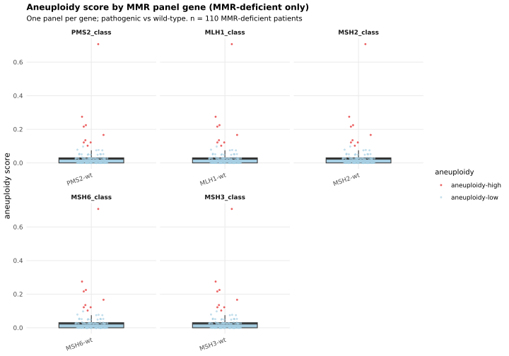
The same comparison for CTNNB1 and APC. These are shown apart from the MMR panel because they are a different mechanism: they are not a cause of mismatch-repair deficiency, so a signal here would mean something biologically different from a signal in the MMR panel above.
wnt_gene_vars <- paste0(attend_gene_panel_wnt, "_class")
if (nrow(dat) > 0)
knitr::kable(group_counts(dat, wnt_gene_vars),
caption = "Patients per group, Wnt pathway genes (MMR-deficient cohort)")| comparison | APC-wt | CTNNB1-wt |
|---|---|---|
| APC_class | 109 | 0 |
| CTNNB1_class | 0 | 109 |
The same aneuploidy score against Wnt-pathway mutation status, two panels.
if (nrow(dat) > 0)
aneu_box(dat, wnt_gene_vars,
"Aneuploidy score by Wnt pathway gene (MMR-deficient only)",
"CTNNB1 and APC — shown separately from the MMR panel; not part of the MMR union",
ncol = 2)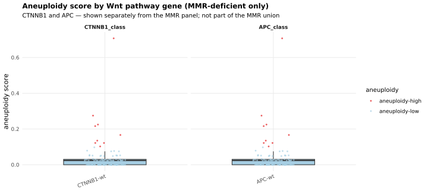
TP53 on its own, then the MMR panel union — at least one pathogenic variant in any of PMS2, MLH1, MSH2, MSH6, MSH3. The union is the last mutation view rather than the first: it is the least specific, and the per-gene panels above are what say which gene any union signal came from.
summary_vars <- c("TP53_class", "panel_class")
if (nrow(dat) > 0)
knitr::kable(group_counts(dat, summary_vars),
caption = "Patients per group, TP53 and the MMR union (MMR-deficient cohort)")| comparison | TP53-mut | TP53-wt | MMR-panel-wt |
|---|---|---|---|
| TP53_class | 19 | 90 | 0 |
| panel_class | 0 | 0 | 109 |
Aneuploidy score by TP53 status and by the MMR union, side by side, so a union signal can be read against the per-gene panels above that would have to explain it.
if (nrow(dat) > 0)
aneu_box(dat, summary_vars,
"Aneuploidy score by TP53 status and by the MMR panel union (MMR-deficient only)",
ncol = 2)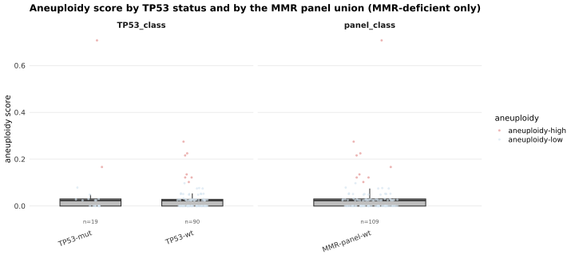
The non-mutation axes, still within MMRd: TMB, HRD, and MSI status. MMR_class is omitted because it is constant here by construction — every patient in this report is MMR-deficient.
MSI is worth reading carefully: MMR loss is the usual cause of microsatellite instability, so within an MMRd cohort the MSI-stable group is both small and unusual.
other_vars <- c("TMB_class", "HRD_class", "MSI_class")
if (nrow(dat) > 0) {
knitr::kable(group_counts(dat, other_vars),
caption = "Patients per group, score-derived classes (MMR-deficient cohort)")
aneu_box(dat, other_vars,
"Aneuploidy score by TMB / HRD / MSI class (MMR-deficient only)",
ncol = 3)
}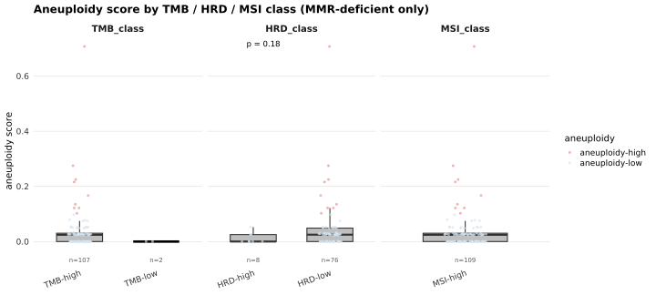
“Cell type” is phenotype_clean, the parenthetical phenotype label in the FlowPath export (changeable in code/load_phenotypes.R). Every count is taken inside the annotated region and expressed as a fraction, but the denominator changes the question, so all three are shown:
| Normalization | Denominator | The question it answers |
|---|---|---|
| all cells inside | every cell in the annotation | what fraction of the tissue is this cell type? |
| tumour cells inside | tumour cells only | how much of this cell type per unit of tumour? |
| CD45+ cells inside | leukocytes only | what is the composition of the immune compartment? |
Each is drawn twice: the raw fraction with a Wilcoxon test, and the arcsine-square-root-transformed fraction with a two-sample t-test. Agreement between the two is reassurance; disagreement means the result depends on the test rather than the data. No multiple-testing correction is applied anywhere in this report, and with one test per cell type per normalization that is many comparisons, so every p-value here is descriptive.
Three things are joined on pid: the aneuploidy class from the master, the per-patient cell-type composition read from the FlowPath tree by ihc_celltype_metrics(), and the continuous covariates. MMR status comes from add_scna_group(), so it is the same is_mmrd() call the copy-number and classification reports use. The counts printed here are the cohort for every figure below.
master_grp <- add_scna_group(master) # adds mmr_group ("MMRd"/"MMRp") + scna_group
# per-patient cell-type composition inside the annotation (reads the FlowPath tree)
ct_all <- ihc_celltype_metrics(load_ihc_celltypes(), load_imaging_data()) |>
left_join(master |> select(pid, aneuploidy_class), by = "pid") |>
filter(!is.na(aneuploidy_class))
ct <- ct_all |> filter(pid %in% mmrd_pids) # <- the MMRd restriction
# per-patient continuous covariates + TP53 status, restricted the same way
numcol <- function(col) if (col %in% names(master)) suppressWarnings(as.numeric(master[[col]])) else NA_real_
pt_all <- tibble(
pid = master$pid,
aneuploidy_class = master$aneuploidy_class,
aneuploidy_score = numcol(attend_cols$aneuploidy),
HRD = numcol(attend_cols$hrd),
MSI = numcol("msi__MSI_SCORE"),
TP53 = if ("TP53_pathogenic" %in% names(master))
if_else(master$TP53_pathogenic, "TP53-abnormal", "TP53-normal") else NA_character_
)
# The two TMB definitions, added under their reader-facing names so every facet reads
# "TMB (normal)" / "TMB (ancestry corrected)" rather than an internal column name.
tmb_defs04 <- tmb_defs_present(master)
tmb_labs04 <- tmb_def_labels(tmb_defs04)
for (i in seq_along(tmb_defs04)) pt_all[[tmb_labs04[i]]] <- numcol(tmb_defs04[[i]])
covar_cols04 <- c(tmb_labs04, "HRD", "MSI")
pt <- pt_all |> filter(pid %in% mmrd_pids) # <- the MMRd restriction
cat("MMR-deficient patients :", length(mmrd_pids), "\n")MMR-deficient patients : 110 cat(" ... with cell-type metrics + aneuploidy class:", n_distinct(ct$pid), "\n") ... with cell-type metrics + aneuploidy class: 39 cat(" ... cell types measured :", n_distinct(ct$cell_type), "\n") ... cell types measured : 13 cat("TMB definitions plotted:", paste(tmb_labs04, collapse = " | "), "\n\n")TMB definitions plotted: TMB (normal) | TMB (ancestry corrected) if (nrow(ct) > 0) print(table(aneuploidy = droplevels(factor(
ct |> distinct(pid, aneuploidy_class) |> pull(aneuploidy_class)))))aneuploidy
aneuploidy-high aneuploidy-low
5 34 One panel per cell type, aneuploidy-high vs -low, within MMRd, from the ct table built above. Each normalization is shown as a raw-fraction/Wilcoxon figure followed by its arcsine/t-test companion.
Each cell type as a fraction of every cell in the annotation, so a panel reads “how much of the tissue is this”. Raw fractions, Wilcoxon.
box_by_aneu(ct, "frac_inside", "all cells inside")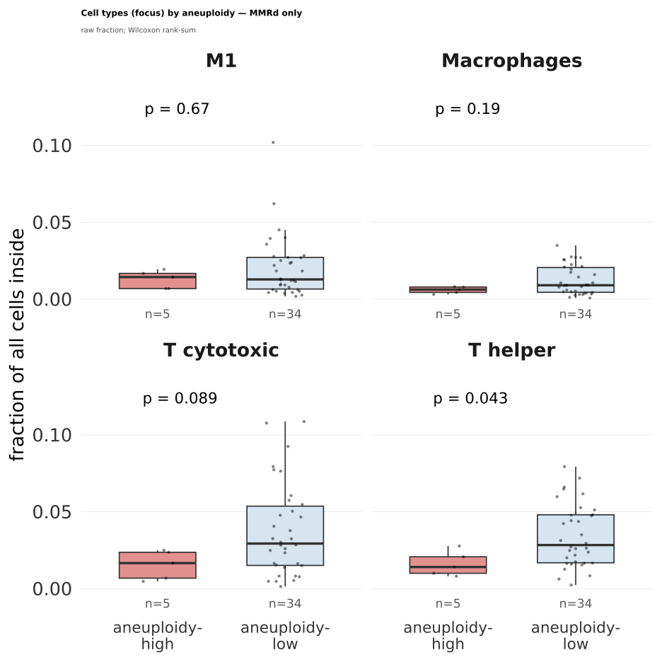
The same panels on the arcsine-square-root scale with a two-sample t-test, which is the variance-stabilised companion rather than an alternative answer.
box_by_aneu_arcsin(ct, "frac_inside", "all cells inside")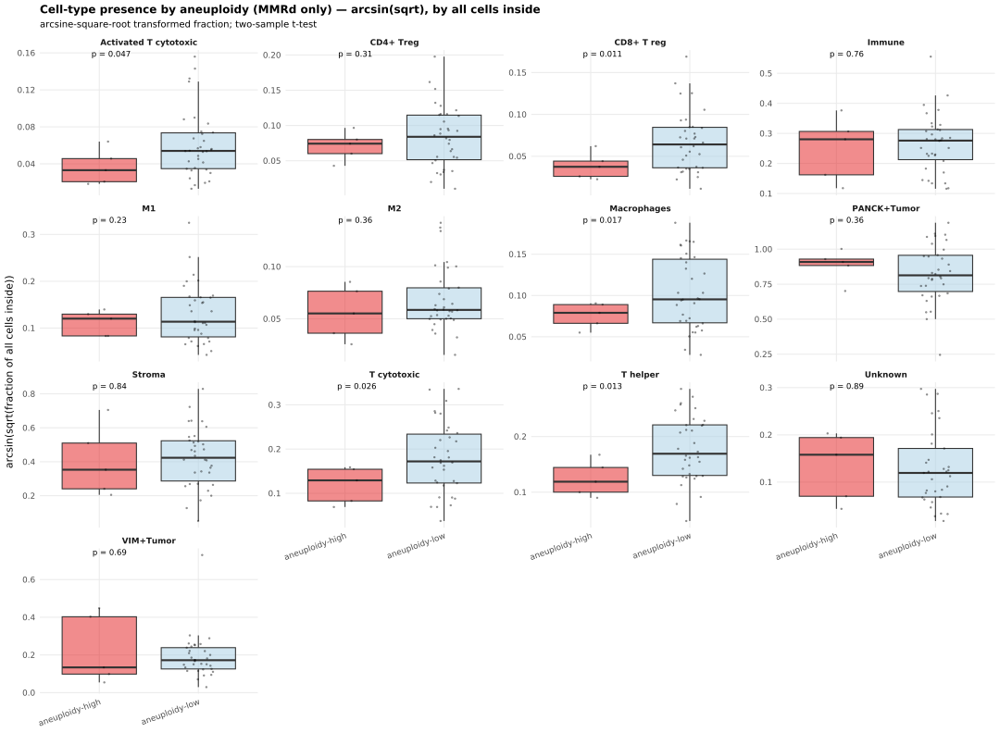
Each cell type per unit of tumour: the denominator is tumour cells only, so a shift here survives a change in how much tumour the annotation caught. Raw fractions, Wilcoxon.
box_by_aneu(ct, "frac_tumor", "tumour cells inside")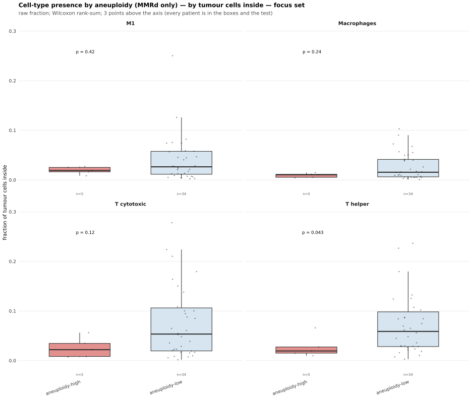
The arcsine/t-test companion of the panels above.
box_by_aneu_arcsin(ct, "frac_tumor", "tumour cells inside")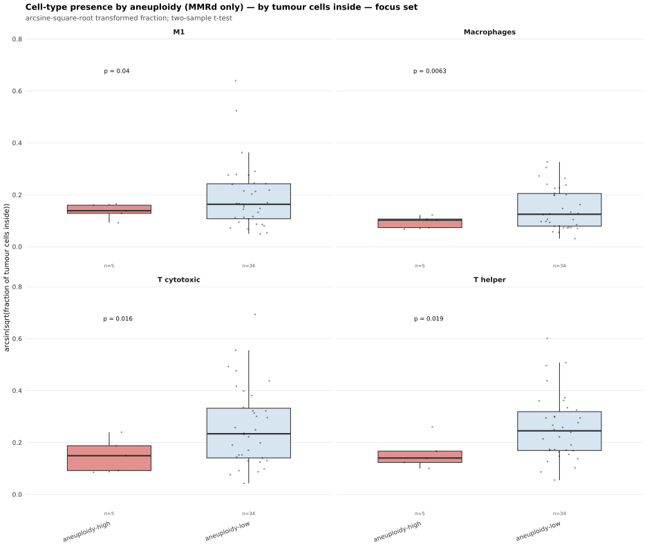
Composition of the immune compartment: the denominator is leukocytes, so tumour-content differences between patients cannot drive the contrast. Raw fractions, Wilcoxon.
box_by_aneu(ct, "frac_cd45", "CD45+ cells inside")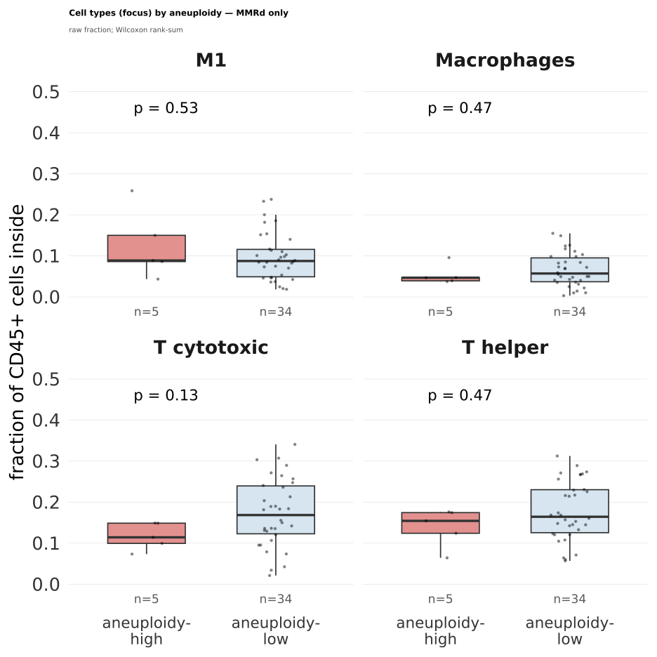
The arcsine/t-test companion of the panels above.
box_by_aneu_arcsin(ct, "frac_cd45", "CD45+ cells inside")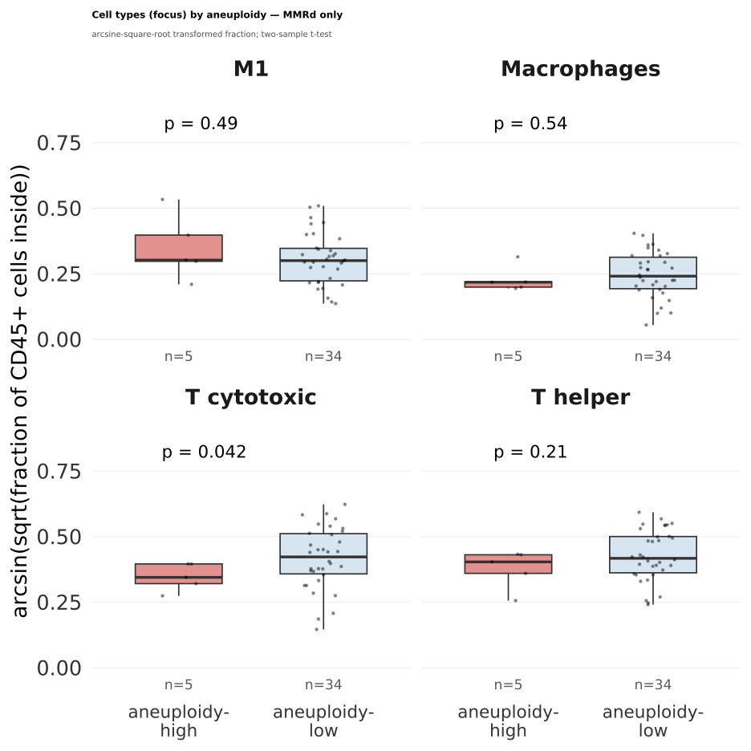
The question this report exists for: among MMR-deficient tumours, is aneuploidy-high associated with an immune-cold phenotype?
Two leukocyte metrics counted inside the annotation — CD45+ total (all leukocytes) and CD3+CD45+ (double-positive T cells) — under each normalization. CD3+CD45+ requires a CD3_sign column in the FlowPath export; without it those rows are NA and their facets drop out on their own.
imm_all <- ihc_immune_metrics(load_ihc_celltypes(), load_imaging_data()) |>
left_join(master |> select(pid, aneuploidy_class), by = "pid") |>
filter(!is.na(aneuploidy_class))
imm_metrics <- imm_all |> filter(pid %in% mmrd_pids) # <- the MMRd restriction
cat("MMR-deficient patients with immune metrics:", n_distinct(imm_metrics$pid),
"| metrics present:", paste(sort(unique(imm_metrics$metric)), collapse = ", "), "\n")MMR-deficient patients with immune metrics: 39 | metrics present: CD3+CD45+, CD45+ CD45+ total and CD3+CD45+ fractions from imm_metrics, by aneuploidy class, one facet per normalization, within MMRd.
if (nrow(filter(imm_metrics, is.finite(frac))) > 2) {
print(box_immune(imm_metrics, arcsin = FALSE))
print(box_immune(imm_metrics, arcsin = TRUE))
} else message("No finite immune metrics in the MMRd cohort (CD3/CD45 counts missing) — skipping.")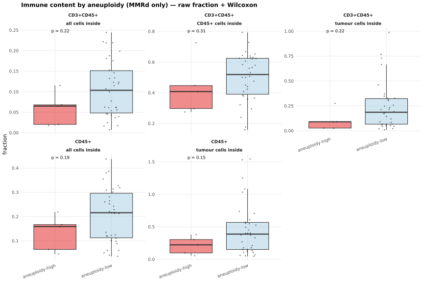
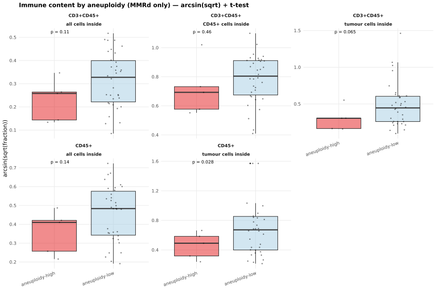
Of everything above, one comparison is designated primary: CD45+ / all cells inside, tested with the arcsine-square-root transform and a two-sample t-test. The Wilcoxon on the raw fraction is reported next to it as a companion, not a substitute. The other two normalizations, and CD3+CD45+, are secondary — they can and do degrade to a skip when counts are missing.
Naming one primary endpoint in advance is what keeps this from being a search across six panels for the smallest p-value.
mmrd_arcsin_t_wilcox <- function(df, metric_, denom_) {
d <- df |> dplyr::filter(metric == metric_, denom_label == denom_, is.finite(frac))
tab <- table(d$aneuploidy_class)
if (length(tab) < 2 || any(tab < 2)) {
message("MMRd ", metric_, " / ", denom_, ": insufficient n per aneuploidy arm — skipping.")
return(invisible(NULL))
}
t_res <- t.test(arcsin_sqrt(frac) ~ aneuploidy_class, data = d) # primary
w_res <- wilcox.test(frac ~ aneuploidy_class, data = d) # companion
cat(sprintf("MMRd %-10s / %-20s n=%d (high=%d, low=%d) arcsin-t p=%.3g Wilcoxon p=%.3g\n",
metric_, denom_, nrow(d), tab[["aneuploidy-high"]], tab[["aneuploidy-low"]],
t_res$p.value, w_res$p.value))
list(d = d, t = t_res, w = w_res)
}
res_primary <- mmrd_arcsin_t_wilcox(imm_metrics, "CD45+", "all cells inside") # PRIMARYMMRd CD45+ / all cells inside n=39 (high=5, low=34) arcsin-t p=0.143 Wilcoxon p=0.192res_tumor <- mmrd_arcsin_t_wilcox(imm_metrics, "CD45+", "tumour cells inside") # secondaryMMRd CD45+ / tumour cells inside n=39 (high=5, low=34) arcsin-t p=0.0283 Wilcoxon p=0.152res_cd45n <- mmrd_arcsin_t_wilcox(imm_metrics, "CD3+CD45+", "CD45+ cells inside") # secondaryMMRd CD3+CD45+ / CD45+ cells inside n=39 (high=5, low=34) arcsin-t p=0.457 Wilcoxon p=0.314The primary contrast on its own. The subtitle carries both p-values and the group size — at this n a single patient moving between groups can change the result, which is why the count is on the figure rather than in a caption.
if (!is.null(res_primary)) {
d <- res_primary$d
ggplot(d, aes(aneuploidy_class, frac, fill = aneuploidy_class)) +
geom_boxplot(outlier.shape = NA, alpha = 0.5) +
highlight_points(d, "aneuploidy_class", "frac", base_size = 1.2, base_alpha = 0.5, base_const = "black") +
stat_compare_means(method = "wilcox.test", label = "p.format", size = 3) +
scale_fill_manual(values = attend_aneu_cols) +
labs(title = "PRIMARY: CD45+ immune fraction (all cells inside) — MMR-deficient only",
subtitle = paste0("arcsin(sqrt) t p = ", signif(res_primary$t$p.value, 3),
" | Wilcoxon p = ", signif(res_primary$w$p.value, 3),
" (n = ", nrow(d), "; small-n — suggestive only)"),
x = NULL, y = "CD45+ fraction of all cells inside") +
attend_theme() + theme(legend.position = "none")
} else message("Primary within-MMRd immune contrast skipped — see message above.")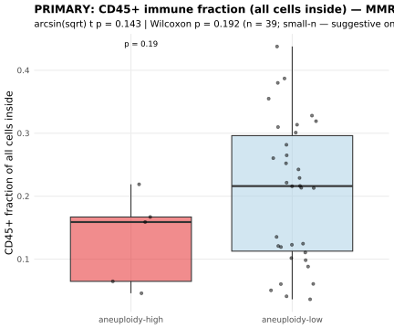
The single exception to this report’s MMRd restriction, and it has to be: an interaction asks whether the aneuploidy effect differs between MMRd and MMRp, which cannot be estimated inside one stratum. The model is arcsin(sqrt(CD45+/all cells inside)) ~ aneuploidy_class * mmr_group, fitted on both groups from imm_all. The interaction row is the one of interest: a large coefficient there is what justifies restricting everything else to MMRd. No correction is applied.
imm_int <- imm_all |>
dplyr::filter(metric == "CD45+", denom_label == "all cells inside", is.finite(frac)) |>
dplyr::left_join(master_grp |> dplyr::select(pid, mmr_group), by = "pid") |>
dplyr::filter(!is.na(mmr_group), !is.na(aneuploidy_class)) |>
dplyr::mutate(y = arcsin_sqrt(frac))
if (nrow(imm_int) > 4 && dplyr::n_distinct(imm_int$aneuploidy_class) == 2 &&
dplyr::n_distinct(imm_int$mmr_group) == 2) {
fit <- lm(y ~ aneuploidy_class * mmr_group, data = imm_int)
coef_tbl <- if (requireNamespace("broom", quietly = TRUE)) broom::tidy(fit) else
as.data.frame(summary(fit)$coefficients)
print(knitr::kable(coef_tbl, digits = 3,
caption = "arcsin(sqrt(CD45+/all-cells-inside)) ~ aneuploidy_class * mmr_group — BOTH MMR groups, no correction"))
} else message("Not enough patients across both MMR groups for the interaction model.")
Table: arcsin(sqrt(CD45+/all-cells-inside)) ~ aneuploidy_class * mmr_group — BOTH MMR groups, no correction
|term | estimate| std.error| statistic| p.value|
|:--------------------------------------------|--------:|---------:|---------:|-------:|
|(Intercept) | 0.405| 0.062| 6.515| 0.000|
|aneuploidy_classaneuploidy-low | 0.060| 0.152| 0.392| 0.697|
|mmr_groupMMRd | -0.047| 0.088| -0.532| 0.597|
|aneuploidy_classaneuploidy-low:mmr_groupMMRd | 0.037| 0.166| 0.224| 0.824|Aneuploidy score against TMB (both definitions), HRD, and MSI, within MMRd. One point per patient, coloured by aneuploidy class, with Spearman’s rho per panel. Spearman rather than Pearson because these scores are bounded and skewed.
The two TMB panels are the same patients under the two definitions, so a visible difference between them is the germline correction moving values, not new data.
scat <- pt |>
pivot_longer(all_of(covar_cols04), names_to = "covariate", values_to = "value") |>
filter(!is.na(aneuploidy_score), !is.na(value)) |>
mutate(covariate = factor(covariate, levels = covar_cols04))
if (nrow(scat) > 2) {
rho <- scat |>
group_by(covariate) |>
summarise(label = paste0("rho = ",
round(suppressWarnings(cor(aneuploidy_score, value, method = "spearman",
use = "complete.obs")), 2)), .groups = "drop")
ggplot(scat, aes(aneuploidy_score, value, colour = aneuploidy_class)) +
highlight_points(scat, "aneuploidy_score", "value", base_colour = "aneuploidy_class",
base_palette = attend_aneu_cols,
base_name = "aneuploidy", jitter_width = 0, base_size = 1.5, base_alpha = 0.6) +
geom_smooth(method = "lm", se = FALSE, colour = "grey40", linewidth = 0.6) +
geom_text(data = rho, aes(x = Inf, y = Inf, label = label),
inherit.aes = FALSE, hjust = 1.05, vjust = 1.5, size = 3) +
facet_wrap(~ covariate, scales = "free_y", ncol = 3) +
labs(title = "Aneuploidy score vs continuous covariates (MMR-deficient only)",
x = "aneuploidy score", y = "covariate value", colour = NULL) +
attend_theme() + theme(legend.position = "top")
} else message("Not enough MMR-deficient patients with aneuploidy score + a covariate.")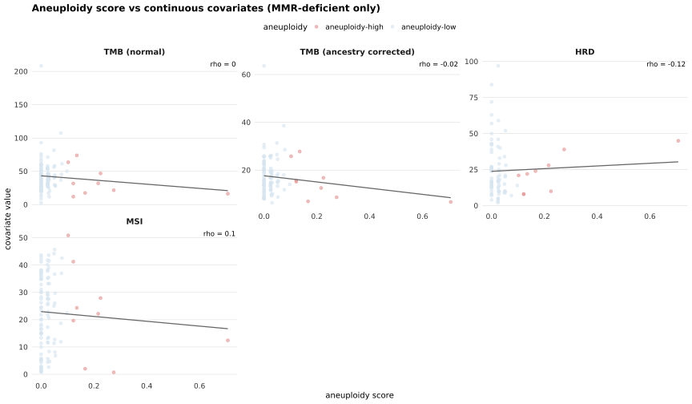
The same covariates against the binarised aneuploidy class rather than the continuous score — the categorical counterpart to the scatter above, with a per-covariate Wilcoxon. Comparing the two is a check on the 0.1 cutpoint: a correlation visible in the scatter but absent here means the cutpoint is discarding it.
cb <- pt |>
pivot_longer(all_of(covar_cols04), names_to = "covariate", values_to = "value") |>
filter(!is.na(aneuploidy_class), !is.na(value)) |>
mutate(covariate = factor(covariate, levels = covar_cols04))
if (nrow(cb) > 2) {
ggplot(cb, aes(aneuploidy_class, value, fill = aneuploidy_class)) +
geom_boxplot(outlier.shape = NA, alpha = 0.5) +
highlight_points(cb, "aneuploidy_class", "value", base_size = 0.6, base_alpha = 0.4,
base_const = "black") +
stat_compare_means(method = "wilcox.test", label = "p.format", size = 3) +
facet_wrap(~ covariate, scales = "free_y", ncol = 3) +
scale_fill_manual(values = attend_aneu_cols) +
labs(title = "Continuous covariates by aneuploidy class (MMR-deficient only)",
x = NULL, y = "covariate value") +
attend_theme() + theme(legend.position = "none")
} else message("Not enough MMR-deficient patients with aneuploidy class + a covariate.")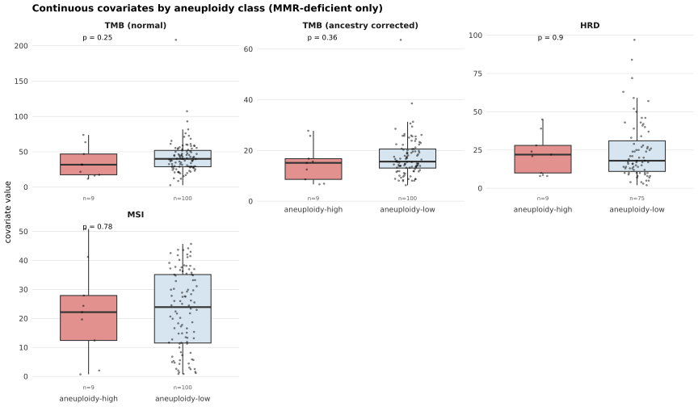
Within MMRd, aneuploidy score in TP53-abnormal versus TP53-normal tumours. TP53 status is TP53_pathogenic from the master, derived from the MAF in report 01. TP53 loss is the canonical driver of chromosomal instability, so this is the expected-positive control for the aneuploidy score itself: if aneuploidy does not separate on TP53 here, the score is suspect before any of the immune results are interpreted.
tp <- pt |> filter(!is.na(TP53), !is.na(aneuploidy_score))
if (nrow(tp) > 2 && dplyr::n_distinct(tp$TP53) == 2) {
ggplot(tp, aes(TP53, aneuploidy_score, fill = TP53)) +
geom_boxplot(outlier.shape = NA, alpha = 0.5) +
highlight_points(tp, "TP53", "aneuploidy_score", base_size = 1.5, base_alpha = 0.5,
base_const = "black") +
stat_compare_means(method = "wilcox.test", label = "p.format") +
scale_fill_manual(values = attend_tp53_cols) +
labs(title = "Aneuploidy by TP53 status (MMR-deficient only)",
x = NULL, y = "aneuploidy score") +
attend_theme() + theme(legend.position = "none")
} else {
message("Not enough MMR-deficient patients with both TP53 classes, or TP53_pathogenic ",
"is missing from the master (rebuild report 01).")
}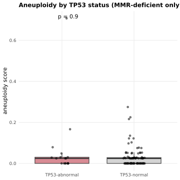
The pathologist’s per-patient scores compared between aneuploidy high and low, within MMRd. These come from the imaging sheet keyed by image → pid, averaged over a patient’s images for the continuous measures and taking the first non-missing value for the categorical calls.
first_nonNA <- function(x) { x <- x[!is.na(x)]; if (length(x)) x[1] else NA }
imaging_pt <- load_imaging_data() |>
filter(!is.na(ID)) |>
group_by(pid = as.character(ID)) |>
summarise(
Immune_infiltrate = mean(suppressWarnings(as.numeric(Immune_infiltrate)), na.rm = TRUE),
Immune_infiltrate_PD1 = mean(suppressWarnings(as.numeric(Immune_infiltrate_PD1)), na.rm = TRUE),
ARID1A = first_nonNA(ARID1A),
Tumor_cells_PDL1 = first_nonNA(Tumor_cells_PDL1),
Immune_infiltrate_PDL1 = first_nonNA(Immune_infiltrate_PDL1),
.groups = "drop"
) |>
left_join(master |> select(pid, aneuploidy_class), by = "pid") |>
filter(!is.na(aneuploidy_class), pid %in% mmrd_pids) # <- the MMRd restriction
cat("MMR-deficient patients with imaging covariates:", n_distinct(imaging_pt$pid), "\n")MMR-deficient patients with imaging covariates: 40 Continuous pathologist scores (immune infiltrate and PD-1 infiltrate, as percentages) by aneuploidy class, Wilcoxon per panel. These are the pathologist’s independent read of the same immune question the FlowPath contrast above asked.
icc <- imaging_pt |>
pivot_longer(c(Immune_infiltrate, Immune_infiltrate_PD1),
names_to = "covariate", values_to = "value") |>
filter(is.finite(value))
if (nrow(icc) > 2) {
ggplot(icc, aes(aneuploidy_class, value, fill = aneuploidy_class)) +
geom_boxplot(outlier.shape = NA, alpha = 0.5) +
highlight_points(icc, "aneuploidy_class", "value", base_size = 0.6, base_alpha = 0.4,
base_const = "black") +
stat_compare_means(method = "wilcox.test", label = "p.format", size = 3) +
facet_wrap(~ covariate, scales = "free_y") +
scale_fill_manual(values = attend_aneu_cols) +
labs(title = "Pathologist immune scores by aneuploidy class (MMR-deficient only)",
x = NULL, y = "pathologist %") +
attend_theme() + theme(legend.position = "none")
}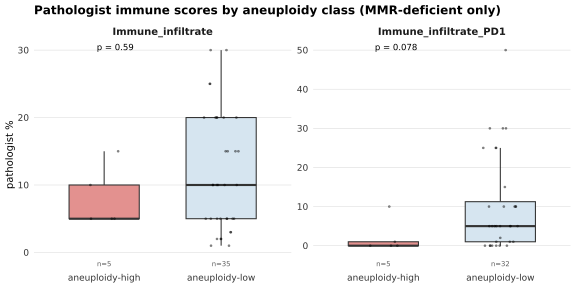
Categorical calls as stacked proportions — how each call distributes within aneuploidy high vs low. Bars are proportions, so the group sizes are not visible in this figure; read them from the count printed above. MMR_Status is omitted because it is constant here by construction.
icat <- imaging_pt |>
select(aneuploidy_class, ARID1A, Tumor_cells_PDL1, Immune_infiltrate_PDL1) |>
pivot_longer(-aneuploidy_class, names_to = "covariate", values_to = "level") |>
filter(!is.na(level), level != "")
if (nrow(icat) > 0) {
ggplot(icat, aes(aneuploidy_class, fill = level)) +
geom_bar(position = "fill") +
facet_wrap(~ covariate, scales = "free_x", nrow = 1) +
labs(title = "Pathologist categorical calls by aneuploidy class (MMR-deficient only)",
x = NULL, y = "proportion of patients", fill = NULL) +
attend_theme() +
theme(axis.text.x = element_text(angle = 20, hjust = 1))
}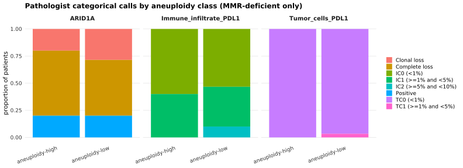
sessionInfo()R version 4.3.2 (2023-10-31)
Platform: x86_64-pc-linux-gnu (64-bit)
Running under: Rocky Linux 9.5 (Blue Onyx)
Matrix products: default
BLAS/LAPACK: FlexiBLAS OPENBLAS; LAPACK version 3.11.0
locale:
[1] LC_CTYPE=C.UTF-8 LC_NUMERIC=C LC_TIME=C.UTF-8
[4] LC_COLLATE=C.UTF-8 LC_MONETARY=C.UTF-8 LC_MESSAGES=C.UTF-8
[7] LC_PAPER=C.UTF-8 LC_NAME=C LC_ADDRESS=C
[10] LC_TELEPHONE=C LC_MEASUREMENT=C.UTF-8 LC_IDENTIFICATION=C
time zone: Europe/Rome
tzcode source: system (glibc)
attached base packages:
[1] stats graphics grDevices utils datasets methods base
other attached packages:
[1] data.table_1.18.4 fs_2.1.0 readxl_1.5.0 ggpubr_0.6.0
[5] here_1.0.2 lubridate_1.9.5 forcats_1.0.1 stringr_1.6.0
[9] dplyr_1.2.1 purrr_1.0.2 readr_2.2.0 tidyr_1.3.2
[13] tibble_3.3.1 ggplot2_4.0.3 tidyverse_2.0.0
loaded via a namespace (and not attached):
[1] gtable_0.3.6 xfun_0.58 bslib_0.9.0 rstatix_0.7.2
[5] lattice_0.22-5 tzdb_0.5.0 vctrs_0.7.3 tools_4.3.2
[9] generics_0.1.4 parallel_4.3.2 pkgconfig_2.0.3 Matrix_1.6-4
[13] RColorBrewer_1.1-3 S7_0.2.2 lifecycle_1.0.5 compiler_4.3.2
[17] farver_2.1.2 git2r_0.33.0 carData_3.0-5 httpuv_1.6.12
[21] htmltools_0.5.9 sass_0.4.10 yaml_2.3.12 crayon_1.5.3
[25] later_1.4.8 pillar_1.11.1 car_3.1-2 jquerylib_0.1.4
[29] whisker_0.4.1 cachem_1.1.0 abind_1.4-5 nlme_3.1-164
[33] tidyselect_1.2.1 digest_0.6.39 stringi_1.8.7 splines_4.3.2
[37] labeling_0.4.3 rprojroot_2.1.1 fastmap_1.2.0 grid_4.3.2
[41] cli_3.6.6 magrittr_2.0.5 dichromat_2.0-0.1 broom_1.0.13
[45] withr_3.0.2 scales_1.4.0 promises_1.5.0 backports_1.4.1
[49] bit64_4.0.5 timechange_0.4.0 rmarkdown_2.31 bit_4.6.0
[53] otel_0.2.0 ggsignif_0.6.4 workflowr_1.7.2 cellranger_1.1.0
[57] hms_1.1.4 evaluate_1.0.5 knitr_1.51 mgcv_1.9-0
[61] rlang_1.2.0 Rcpp_1.1.1-1.1 glue_1.8.1 rstudioapi_0.15.0
[65] vroom_1.7.1 jsonlite_2.0.0 R6_2.6.1
sessionInfo()R version 4.3.2 (2023-10-31)
Platform: x86_64-pc-linux-gnu (64-bit)
Running under: Rocky Linux 9.5 (Blue Onyx)
Matrix products: default
BLAS/LAPACK: FlexiBLAS OPENBLAS; LAPACK version 3.11.0
locale:
[1] LC_CTYPE=C.UTF-8 LC_NUMERIC=C LC_TIME=C.UTF-8
[4] LC_COLLATE=C.UTF-8 LC_MONETARY=C.UTF-8 LC_MESSAGES=C.UTF-8
[7] LC_PAPER=C.UTF-8 LC_NAME=C LC_ADDRESS=C
[10] LC_TELEPHONE=C LC_MEASUREMENT=C.UTF-8 LC_IDENTIFICATION=C
time zone: Europe/Rome
tzcode source: system (glibc)
attached base packages:
[1] stats graphics grDevices utils datasets methods base
other attached packages:
[1] data.table_1.18.4 fs_2.1.0 readxl_1.5.0 ggpubr_0.6.0
[5] here_1.0.2 lubridate_1.9.5 forcats_1.0.1 stringr_1.6.0
[9] dplyr_1.2.1 purrr_1.0.2 readr_2.2.0 tidyr_1.3.2
[13] tibble_3.3.1 ggplot2_4.0.3 tidyverse_2.0.0
loaded via a namespace (and not attached):
[1] gtable_0.3.6 xfun_0.58 bslib_0.9.0 rstatix_0.7.2
[5] lattice_0.22-5 tzdb_0.5.0 vctrs_0.7.3 tools_4.3.2
[9] generics_0.1.4 parallel_4.3.2 pkgconfig_2.0.3 Matrix_1.6-4
[13] RColorBrewer_1.1-3 S7_0.2.2 lifecycle_1.0.5 compiler_4.3.2
[17] farver_2.1.2 git2r_0.33.0 carData_3.0-5 httpuv_1.6.12
[21] htmltools_0.5.9 sass_0.4.10 yaml_2.3.12 crayon_1.5.3
[25] later_1.4.8 pillar_1.11.1 car_3.1-2 jquerylib_0.1.4
[29] whisker_0.4.1 cachem_1.1.0 abind_1.4-5 nlme_3.1-164
[33] tidyselect_1.2.1 digest_0.6.39 stringi_1.8.7 splines_4.3.2
[37] labeling_0.4.3 rprojroot_2.1.1 fastmap_1.2.0 grid_4.3.2
[41] cli_3.6.6 magrittr_2.0.5 dichromat_2.0-0.1 broom_1.0.13
[45] withr_3.0.2 scales_1.4.0 promises_1.5.0 backports_1.4.1
[49] bit64_4.0.5 timechange_0.4.0 rmarkdown_2.31 bit_4.6.0
[53] otel_0.2.0 ggsignif_0.6.4 workflowr_1.7.2 cellranger_1.1.0
[57] hms_1.1.4 evaluate_1.0.5 knitr_1.51 mgcv_1.9-0
[61] rlang_1.2.0 Rcpp_1.1.1-1.1 glue_1.8.1 rstudioapi_0.15.0
[65] vroom_1.7.1 jsonlite_2.0.0 R6_2.6.1